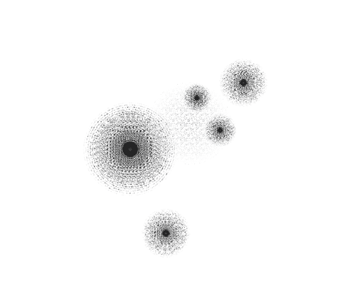

Group project
2020
World Landscape Architecture Student Ideas Competition, Runner up
Team members: Xi (Echo) Chen, Sufeng (Sophia) Xiao, Xuezhen (Esther) Xie, Siqi (Joyce) Zhu
Role in team: conceptual design (30%), visual representation (30%)
Reimagining the Spaces in between is a idea competition that aims to address the various issues raised by COVID-19 and to develop ideas that provide safe, inclusive, and equitable spaces for everyone in a fictional city. Living Ground explored the potentials of the specific scale raised to public attention by the pandemic: six feet distancing. Our team investigates different scenarios that occupy 6ft * 6ft unit space and beyond. The project employs a grid system to offer both a sense of distance and a way to organize programs on the site. Currently, activities are centralized and programmed in urban public space, and the lack of collaboration between different institutions leads to the rigid separation of various programs. The project reflects the significance of landscape architecture in making urban spaces and explores the future of urban space with flexibility and resilience.
